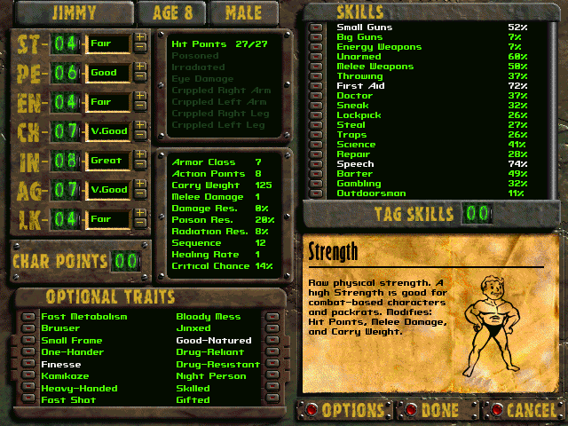
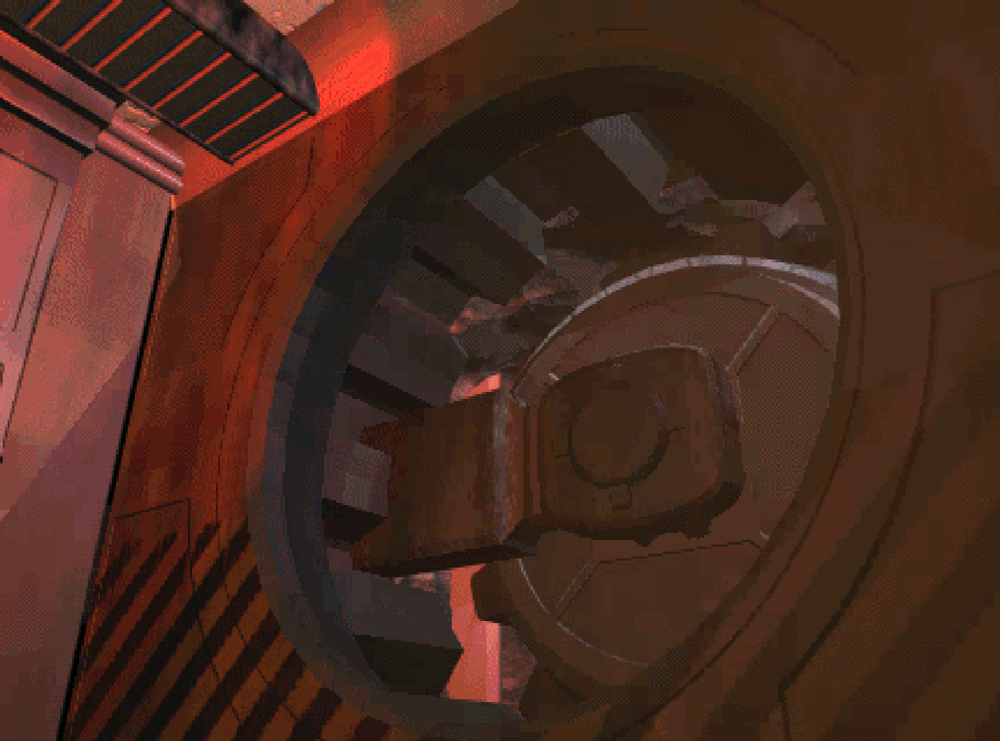

The story of Fallout begins with one of Interplay's previous games: Wasteland.
Wasteland was one of Interplay's first games before they were a publisher, created because the team wanted to explore a post-apocalyptic setting, and published by EA. When Interplay started publishing its own games they went to revisit the idea and were unable to negotiate the rights for Wasteland away from EA.
Still wanting to do something in a post-apoc setting, Brian Fargo and his team made a new setting and game based around it, taking the best aspects from Wasteland and implementing them into a game that would later become the first Fallout.
The S.P.E.C.I.A.L. system didn't start out so special, originally being based around GURPS (Generic Universal Role Playing System) developed by Steve Jackson. Due to the level of violence in the game, the licensing deal with GURPS later fell through and was quickly replaced with S.P.E.C.I.A.L.

| Strength | Raw physical strength. |
| Perception | The ability to see, hear and taste and notice unusual things. |
| Endurance | Stamina and physical toughness. |
| Charisma | A combination of appearance and charm. |
| Intelligence | Knowledge, wisdom and the ability to think quickly. |
| Agility | Coordination and the ability to move well. |
| Luck | Fate, Karma. |
As the use of GURPS and then the S.P.E.C.I.A.L. system suggests, Fallout leaned in heavily to its role-playing roots. Although being classless, players can generate their character with custom attributes, such as putting points into the primary S.P.E.C.I.A.L. characteristics (ranging from 1-10) and selecting (up to 2) traits, both of which affect your skills and other stats like health, armour class and carry weight.

Once you start your adventure you begin to level up from combat and exploration, gaining skill points to allocate to any of the many skills. Every few levels you gain a perk, a permanent increase to a stat such as small guns, recovery rate, carry weight and action points.
Skills can also be increased in other ways found around the wasteland, from books to special encounters, allowing you to specialise your character further, or invest into a wide range of skills to be a jack of all trades, master of none.
The story of Fallout starts out simple, with a vault dweller (you) being sent on a quest to the outside world, tasked with finding a water chip so your community does not perish. Placed outside the vault door with naught but a canteen and a map, the world lays open before you. As your search progresses you will learn more about the wasteland, the people who inhabit it, and the dark secrets that lie beneath...
